class: center, middle # Deep Learning for Natural Language Processing - Part 1 Guillaume Ligner - Côme Arvis --- # Kaggle project instructions .small80[ Register links: - ECE: [https://www.kaggle.com/c/ecedeeplearning2019](https://www.kaggle.com/c/ecedeeplearning2019) - EFREI: [https://www.kaggle.com/c/efreiparisdeeplearning2019](https://www.kaggle.com/c/efreiparisdeeplearning2019) ] .small80[ End date written on the Kaggle platform<br/> Maximum number of people per team: 3 ] Forbidden: .small70[ - Manually labelling the test dataset - Search for the test dataset on internet and train your model on it ] For evaluation you have to provide: .small70[ - Final version of your code: - Must allow to generate a csv file with your team results in it - Code cleanliness, overall code quality and structuring of your project will be evaluated - Report - PDF format, 2-3 pages - Must explain what you did to tackle the challenge - Include tests that might not have worked but that are still relevant ] --- # Fields of application We are going to find out about Natural Language Processing<br/> What is it?<br/> What is it **used for**? .center[<img src="images/fields_application.gif" style="width: 690px;margin-top: 6%" />] --- # What is NLP ? - Natural language processing (NLP) = use of human languages by a computer - Computer programs typically read and emit specialized languages among each other - Allows efficient parsing, unambiguous interpretation - Natural human languages are very often ambiguous and cannot be described formally -- - Many NLP applications are based on language models that define a probability distribution over sequences of words, characters in a natural language --- # Some NLP applications .left-column5[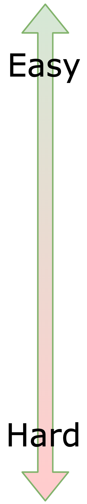] .right-column95.big105[ - Sentence / Document level classification (topic, sentiment) .small80[ $\rightarrow$ Standard multiclass classification problem ] - Named Entity Recognition (NER) .small80[ $\rightarrow$ Locate and classify named entities (e.g. person names, locations, time expressions, ...) ] - Chatbots / dialogue systems / assistants (Alexa, ...) .small80[ $\rightarrow$ Often a combination of intention classification with NER ] - Translation .small80[ $\rightarrow$ Transform a sentence in a human language to an semantically equivalent sentence in another human language ] - Summarization .small80[ $\rightarrow$ Generate a concise and meaningful summary of a long text ] - Natural Language Generation (NLG) .small80[ $\rightarrow$ Generate meaningfull text given a context or a concept ] ] --- # Representation of words - In CNNs we said we are able to map an image to a vector which activations relate to the concepts found in it - If activations come from a VGG or ResNet etc, they generalize well to a lot of different computer vision tasks - We would like to have a **similar representation for words** - able to encode the semantic of words - able to encode the general structure of sentences - that generalizes well to a large panel of NLP tasks --- # Representation of words - Contrary to images, a word does not much information by itself - Pixels in images have all the information about an image - Characters in a word do not encode so much information about the word - Instead, the **context** in which the word is used conveys much information - For instance, you may not know the exact definition of a word while knowing the type of sentence in which to use it - In a nutshell, how can we represent words efficiently? --- # Representation of words .big110[ **One-hot encoding of the words** ] .small90[ - Each word $w_i$ $\in$ vocabulary $\mathbb{V}$ and is mapped to a one-hot vector - vector typically has $0$s everywhere but a $1$ at index $i$ ] -- .small90[ - Vectors are very sparse, of size $\mid\mathbb{V}\mid$, which is the size of the vocabulary ] -- .small90[ - **Big issue**: any two different words have the same Euclidian distance from each other - Euclidian distance is $\sqrt{2}$ - All vector-words are orthogonal to each other - Thus difficult to leverage information about how semantically connected $2$ words are from this representation ] --- # Representation of words .big110[ **Mapping to classes** ] .small90[ - Introduces the notion of word categories ] -- .small90[ - A clustering algorithm partitions the words into categories - Based on co-occurrences of words with other words - Words are mapped to their word category ] -- .small90[ - Allows to share some statistical strength - A word replacing another of same category in a sentence won't change the sentence representation ] -- .small90[ - **Issue**: two different words in the same category are not seen as different - Much information lost ] --- # Representation of words .big110[ **Distributed representation of words** ] .small90[ - Words are mapped to dense vectors like $(1.4,-0.5,...,7)$ ] -- .small90[ - Allows to avoid dimensionality issue of the representation - Can represent as many words as required with a few dimensions ] -- .small90[ - Allows to recognize that two words are semantically similar without losing the ability to encode each word as distinct from the other - By mapping them to distinct dense vectors - Word-vectors that appear in the same contexts have a small Euclidian distance between them ] --- # Representation of words .big110[ **Distributed representation of words** ] .small90[ - Words vectors share some statistical strength between one another .small80[ - Synonyms for instance share close proximity and are interchangeable in the model input - Model will output similar results for them, because their dense vectors are close - Words that are different in terms of their individual parts (characters) can end up very close in the embedding space ]<br/> - We sometimes call these word representations **word embeddings** ] .center[ <img src="images/embedding.png" style="width: 450px;margin-top: 5%" />] --- # Transfer Learning for text .small90[ - Goal: find a representation of words that will generalize well to a large panel of NLP tasks ] -- .small90[ - To achieve this we use **unsupervised** / **self-supervised** learning of word representations - Use a part of the object structure to predict some other part of that object structure - No need for labelled data ] -- .small90[ - Convenient since **unlabelled** text data is almost infinite: - Wikipedia dumps - Project Gutenberg - Social Networks - Common Crawl - $\cdots$ ] --- # Self-supervised learning for text Distributional Hypothesis (Zellig Harris, 1954): .center[ *”Words are characterised by the company that they keep”* ] - Main idea: learning a word embedding by learning to predict the words around it</br> $\rightarrow$ Learn to predict **contexts of words** -- - Given a word e.g. ”car” and any other word $w \in \mathbb{V}$, learn to predict probability $P(w|\text{car})$ that $w$ occurs in the context of “car” -- - Self-supervised: no need for class labels - Requires a lot of text data to cover rare words correctly though --- # Self-supervised learning for text Let's see an example of two words that are semantically equivalent, e.g. ”*begin*” and ”*start*”: - Those two words end up with same words around them most of the time - Thus **distributions** $P(w_i|$*begin*$)$ and $P(w_i|$*start*$)$ should be **almost the same** -- - To make this possible, **embeddings** of ”*begin*” and ”*start*” end-up being **almost the same** - That means they end-up with a **small Euclidian distance** between them --- # Word2vec - Word2vec is a group of models used to produce word embeddings - Shallow models (2-layer neural networks only), trained to predict contexts of words -- - Word2vec models take as input large corpora of text and produce an embedding space - Each word in vocabulary $\mathbb{V}$ is mapped to an **embedding vector** - Embedding vector of several hundred dimensions usually -- - Word2vec comes in with two approaches to tackle the representation problem: - **Continuous Bag of Words (CBOW)** - **Skip-gram** --- # Word2vec: CBOW .small90[ - CBOW: representing the context as **Continuous Bag-of-Word** ] .small90[ - Self-supervision from large unlabeled corpus of text: slide over an **anchor word** and its **context** ] .small90[ - Use **Negative Sampling**: sample negative words at random instead of computing the full softmax over $\mathbb{V}$ vocabulary ] .center[ <img src="images/word2vec_words.svg" style="width: 500px;" /> ] --- # Word2vec: CBOW .small90[ A CBOW Word2vec example with .big110[**$3$**] words as context: the one-hot encoded vectors $x_0$, $x_1$ and $x_2$ ] .center[ 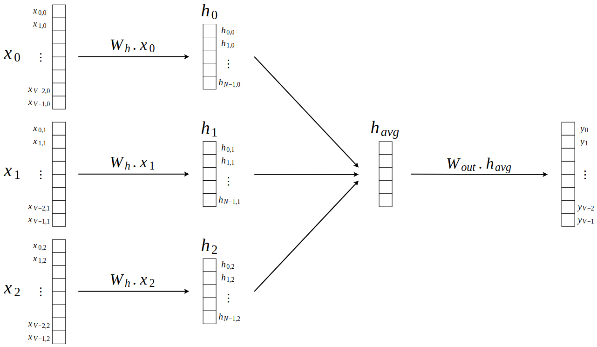 ] --- # Word2vec: CBOW Looking at previous example: - Consider first word $w_0$ is firstly one-hot encoded:</br> $\rightarrow$ Mapped to a vector of zeros everywhere but at its index $i$ - $h_0$ of shape $(H,1)$ is the embedding representation of the first word $w_0$ -- - Since $h_0 = W_h \cdot x_0$ and $x_0$ one-hot encoded, $h_0$ representation is also the $i^{th}$ column of $W_h$ - $W_h \in \mathbb{R}^{H \times \mathbb{V}}$ is the embedding matrix of the words</br> $\rightarrow$ Each column at index $i$ is the representation of word $i$ in $\mathbb{V}$ --- # Word2vec: Skip Gram <br/> .center[ <img src="images/word2vec_skipgram.svg" style="width: 500px;margin-bottom: 0%;" /> ] .small80[ - Given the central word, predict occurence of other words in its context - Widely used in practice as it can deal with **longer sentences** than CBOW - Again **Negative Sampling** is used as a cheaper alternative to full softmax - Large impact of **context size** hyperparameter - The task seems almost impossible to resolve, but this is not really an issue as the goal is only to obtain a **good embedding** ] --- # Word2vec: Skip Gram Let's see Skip Gram through an example: .center[ 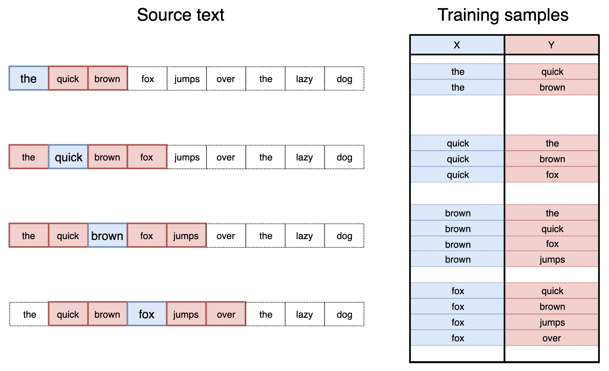 ] .center[Network is going to learn the statistics from the number of times each pairing shows up] --- # Word2vec: Skip Gram .small80[ Here’s the architecture of our neural network: - Vocabulary has $10 000$ words and we want $300$ dimensional representation vectors - Thus weight matrix $W_h$ (that leads to hidden layer) $\in \mathbb{R}^{300 \times 10000}$ ] .center[ 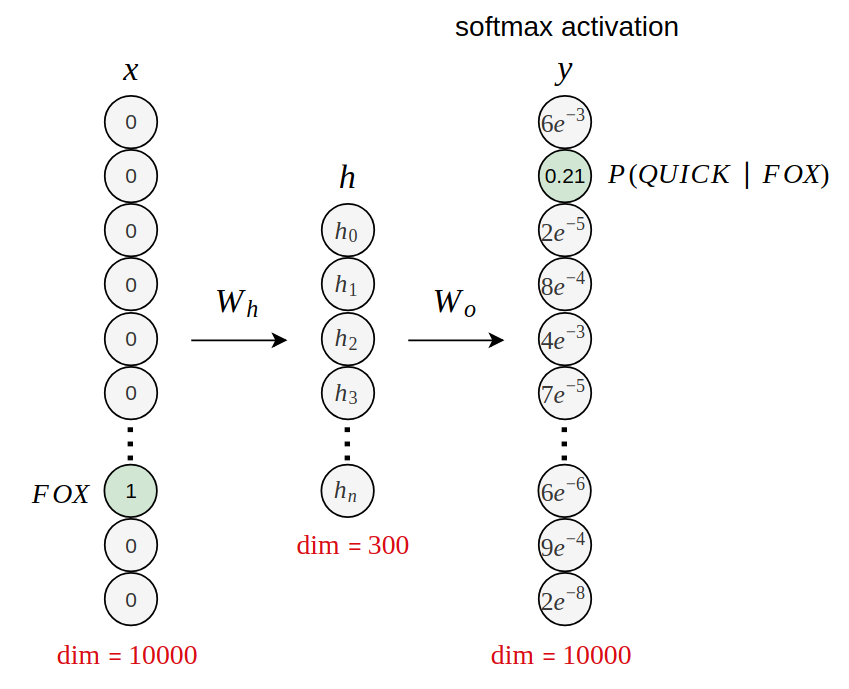 ] --- # Word2vec: Skip Gram From previous example: - No activation function on the hidden layer neurons - The output neurons, on the other hand, have a softmax activation - Hidden layer is actually the **embedding vector**</br> $\rightarrow$ We will see why it has the properties we want later -- - Similarly to CBOW, since $\underset{(300,1)}{h} = \underset{(300,10000)}{W_h} \times \underset{(10000,1)}{x}$ and $x$ is one-hot encoded, $h$ is actually the $i^{th}$ column of $W_h$ --- # Word2vec: Skip Gram Intuition of why it works: .center[ 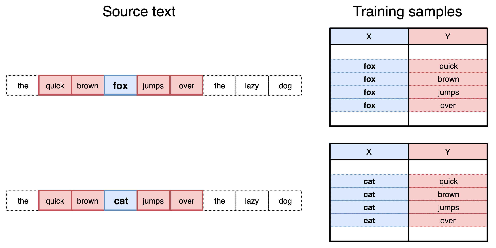 ] <br/> .center[ Words semantically similar have similar "contexts" (words around them) ] --- # Word2vec: Skip Gram .small90[ Intuition of why it works: ] .center[ 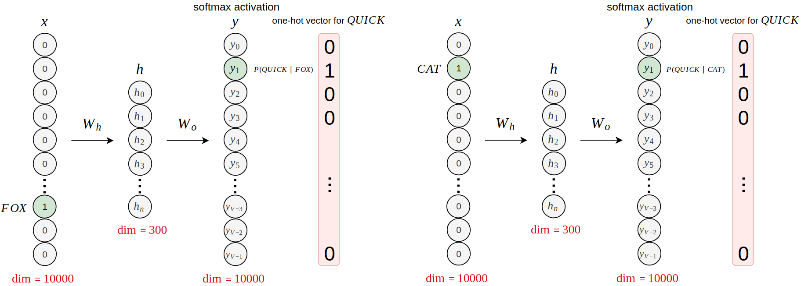 ] <br/> - Those two words have been trained to output the same words (the same one-hot encoded vectors) --- # Word2vec: Skip Gram .small90[ Intuition of why it works: ] .center[ 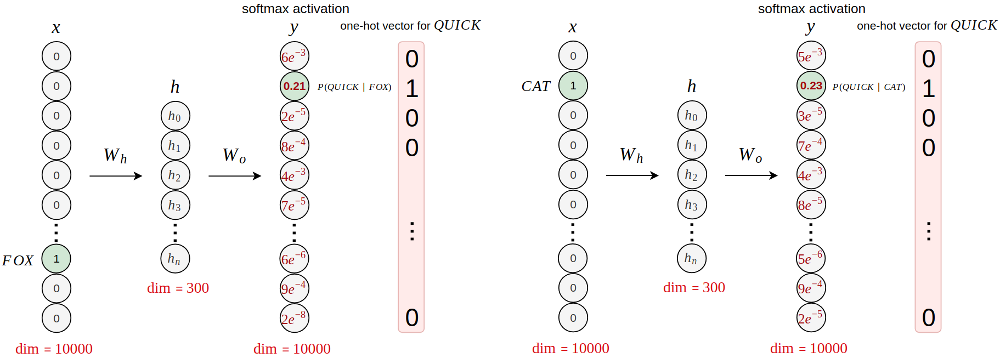 ] <br/> - Thus, post training, those two words, as inputs, lead to **similar softmax distributions** of words around them as outputs --- # Word2vec: Skip Gram .small90[ Intuition of why it works: ] .center[ 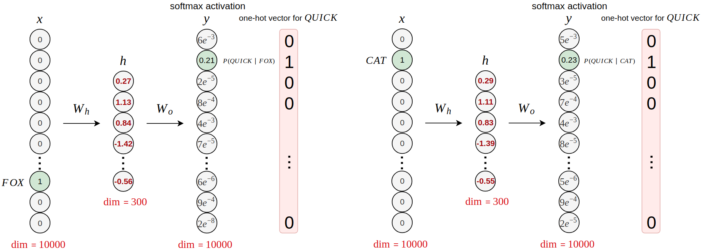 ] <br/> - Thus, post training, those two words, as inputs, lead to **similar softmax distributions** of words around them as outputs - For the outputs to be very similar the two **hidden layers** must be very **similar** --- # Word2vec: Skip Gram .small90[ Intuition of why it works: ] .center[ ] <br/> - Thus words with **similar contexts** end-up having **similar hidden layers** - Hidden layer can be used as **representation vector** --- # Word2vec: CBoW vs Skip Gram - CBoW turns out to be a useful thing as it has a **relatively short training time**<br/><br/> - Skip-gram, by treating each context-target pair as a new observation, tends to perform better, especially on **rare words**, but comes with a **longer training time**<br/><br/> -- - Both benefit from using **negative sampling**: - Only a sample of negative examples is updated at each iteration - It allows the model to simplify the softmax calculation when $|\mathbb{V}|$ becomes large - More details on it on to next class --- # Word vectors with t-SNE .center[ <img src="images/tsne_words.png" style="width: 750px;" /> ] --- # Word vectors arithmetic ### Similarities .center[ <img src="images/most_sim.png" style="width: 500px;margin-bottom: 5%" /> ] ### Compositionality .center[ <img src="images/sum_wv.png" style="width: 700px;" /> ] --- # Word analogies .center[ <img src="images/capitals.png" style="width: 450px;" /> ] - Linear relations in Word2vec embeddings - Many come from text structure (e.g. Wikipedia) --- # Supervised Text Classification - Text classification is maybe the simplest but is a core problem to many applications - Spam detection - Topic classification - Sentiment analysis - Smart replies -- - The goal of text classification is to assign documents (such as emails, posts, text messages, product reviews, etc...) to one or multiple categories - Such categories can be review scores - Spam v.s. non-spam - The language in which the document was typed - $\cdots$ --- # Supervised Text Classification .center[ 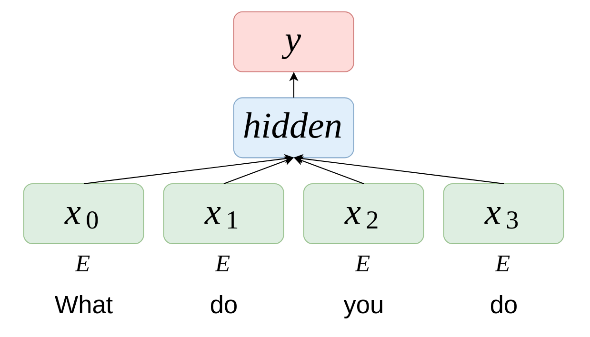 ] | Step | Parameters dimension | Layer dimension | | ------------------------------------------------ |:-------------------------------:| -------------------------------:| | Input ($n = 4$ words here) | | $n \times \vert\mathbb{V}\vert$ | | $\mathbf{E}$ embedding (linear projection) | $H \times \vert\mathbb{V}\vert$ | $n \times H$ | | Embeddings are averaged | | $H$ | | Dense output connection $\mathbf{W}, \mathbf{b}$ | $K \times H$ | $K$ | | Softmax and **cross-entropy** loss | | $K$ | --- # Supervised Text Classification .center[ ] - Very efficient (**speed** and **accuracy**) on large datasets - State-of-the-art (or close to) on several classification tasks, when adding **bigrams/trigrams** - Little gains from depth --- # Recurrent Neural Network .left-column80[ - Recurrent Neural Networks (RNNs) are a family of neural networks for processing **sequential data** - This type of architecture **shares in common** many interesting properties with CNNs making them work well on particular data types: ] .right-column20[ 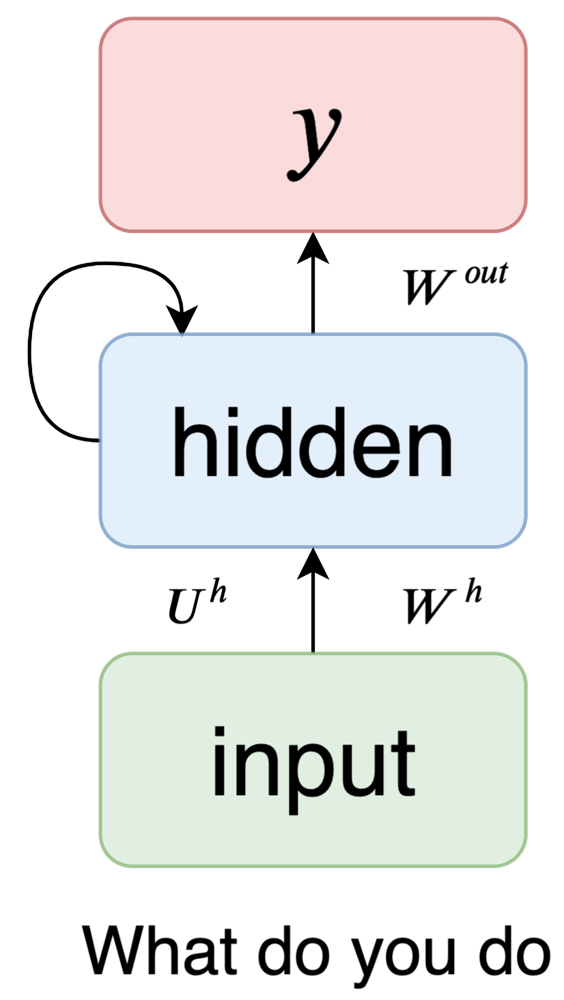 ] <table> <thead> <tr> <th>2D CNNs on images</th> <th>RNNs</th> </tr> </thead> <tbody> <tr> <td>Specialized for processing a grid of values</td> <td>Specialized for processing a sequence of values</td> </tr> <tr> <td>Can scale to images with large width and height</td> <td>Can scale to long sequences</td> </tr> <tr> <td>Can process images of variable size</td> <td>Can process sequences of variable length</td> </tr> <tr> <td colspan="2">Use parameter sharing to improve generalization across different sizes</td> </tr> </tbody> </table> --- # Recurrent Neural Network .center[ 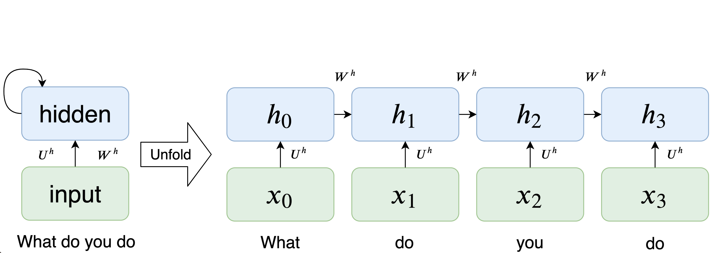 ] - Example of a recurrent hidden layer on a sequence matrix $x \in \mathbb{R}^{\tau \times p}$ - $\tau$ is the number of time steps, we have here $\tau=4$ - $p$ is the vector dimension on the input for a given time step - At each time step, we have one new input vector $x_t \in \mathbb{R}^{p}$ and one hidden vector $h_t \in \mathbb{R}^{h}$ - We can unfold the previous recurrent structure over two sequences: $(x_0, x_1, x_2, x_3)$ and $(h_0, h_1, h_2, h_3)$ --- # Recurrent Neural Network .center[ ] .small90[ - We have the following equation for each $t$: $$h\_t = \text{tanh}(W^h h\_{t-1} + U^hx\_t + b^h)$$ ] .small80.left-column50[ - Three parameter matrices: - the kernel $U^h \in \mathbb{R}^{h \times p}$ - the recurrent kernel $W^h \in \mathbb{R}^{h \times h}$ - the bias $b^h \in \mathbb{R}^{h \times 1}$ ] .small80.right-column50[ - $h(h+p+1)$ parameters for one reccurent layer - the number of parameters does not depend of $\tau$ thanks to parameter sharing ] --- # Recurrent Neural Network .center[ 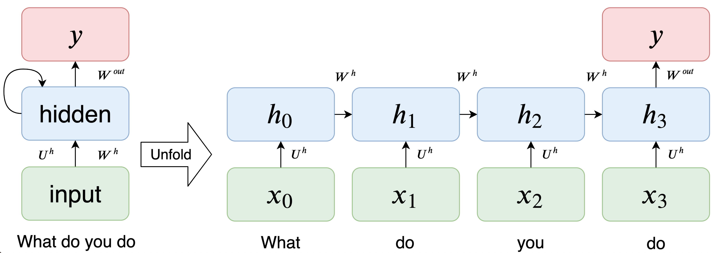 ] - Example of a recurrent neural network with one hidden layer - Produce one unique output $y$ based on $h_{\tau}$: the last recurrent hidden vector $h_t$ - This architecture is called the many-to-one RNN and is maybe the simplest one - For multiclass classification we have the following equation: $$y=\text{softmax}(W^{out}h_{\tau} + b^{out})$$ --- # Backpropagation through time .center[ 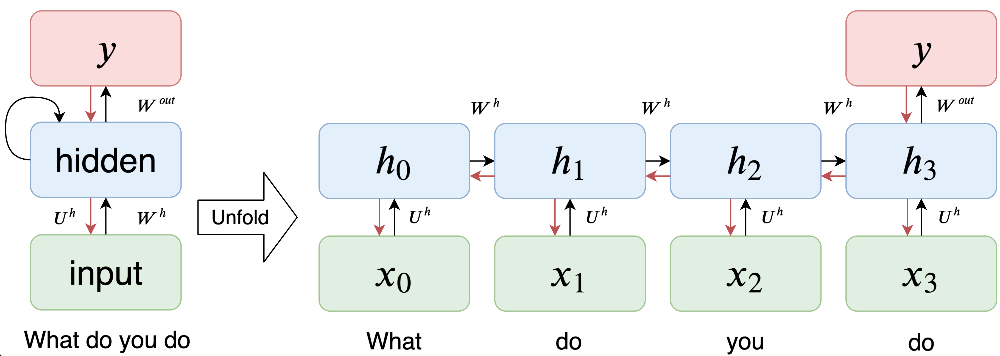 ] Similar as standard backpropagation on unrolled network - Similar as training **very deep** networks with tied parameters - Example here between $x_0$ and $y$: $U^h$, $W^h$ and $b^h$ are used three or four times - Usually truncate the backprop after $T$ timesteps when dealing with too long sequences<br> $\rightarrow$ Difficulties to train long-term dependencies --- # Recurrent Neural Network for Language Modelling .center[ 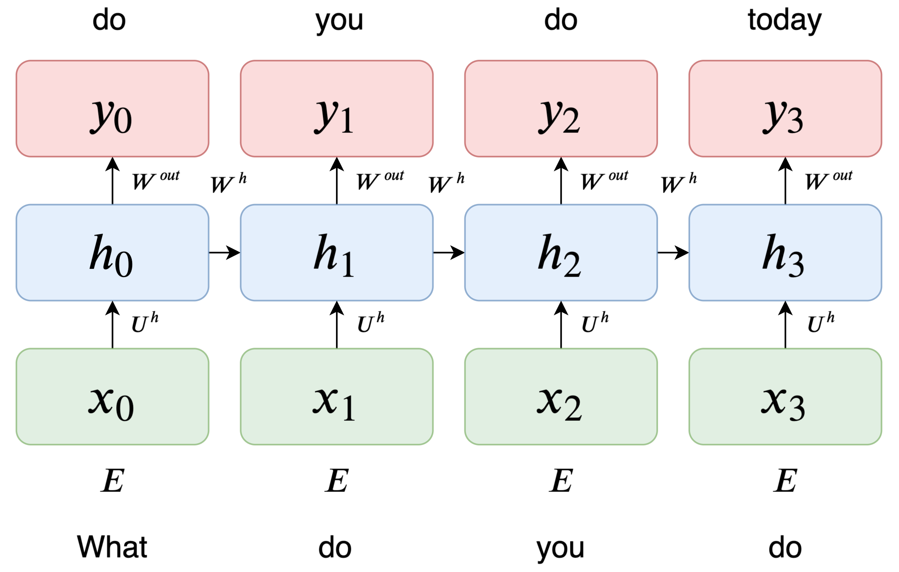 ] .small90[ - Example of many to many architecture - Input: sequence of words $(w\_0, w\_1, ..., w\_{\tau - 1})$ (embedded words) - Output: one step ahead shifted sequence of words $(w\_1, w\_2, ..., w\_{\tau})$ (one-hot encoded words) - Introduce a new word at each new operation and predict the **word ahead** in sentence ] --- # Recurrent Neural Network for Language Modelling .center[ ] $x\_t = \text{Emb}(w\_t)$ .right-column50[input projection .firebrick[$E$]] $h\_t = \text{tanh}(W^h h\_{t-1} + U^h x\_t + b^h)$ .right-column50[recurrent connection .firebrick[$H$]] $y\_t = \text{softmax}(W^{out} h\_t + b^{out} )$ .right-column50[output projection .firebrick[$K = |V|$]] --- # Recurrent Neural Network for Language Modelling .center[ ] .small90[ Parameter sharing of $W^h, U^h, b^h, W^{out}, \text{ and } b^{out}$ - Allows to apply the model to varying length sequences - Generalize to sequence lengths not seen during training - Also share statistical strength across different positions in time ] --- # Vanishing and exploding gradient problems - Recurrent Neural Networks can be seen as **deep computational graphs** that repeatedly apply the same set of operations at each time step of a **long temporal sequence** .small80[ - For example, suppose that the network contains a path that consists in repeatedly multiplying by a matrix $\mathbf{W}$ - After t steps, this is equivalent to multiplying by $\mathbf{W}^t$ - If $W$ has an eigendecomposition then: $\mathbf{W}^t = (\mathbf{V}diag(\mathbf{\lambda})\mathbf{V}^{-1})^t = \mathbf{V}diag(\mathbf{\lambda})^t\mathbf{V}^{-1}$ - So, any eigenvalues $\lambda_i$ will vanish if they are less than 1 in magnitude, or inversely explode if they are greater than 1 in magnitude ] - This phenomena also occurs during the backprop, leading to vanishing or exploding gradients, which makes it difficult to learn **long-term dependencies** --- # Long Short-Term Memory networks (LSTM) .small75[ - Particular kind of RNN, now widely used in industry, specially designed to tackle vanishing and exploding gradients issues - The key feature here is the cell state $C_t$: a horizontal path with only some minor linear interactions, which make long-term dependencies possible by letting the information flows ] .center[ 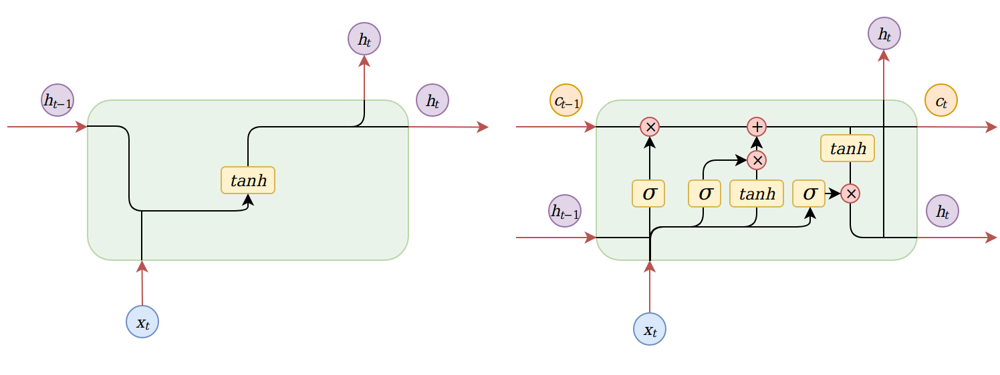 ] .left-column50.center[ Standard RNN cell ] .right-column50.center[ LSTM cell ] --- # LSTM in detail .center[ 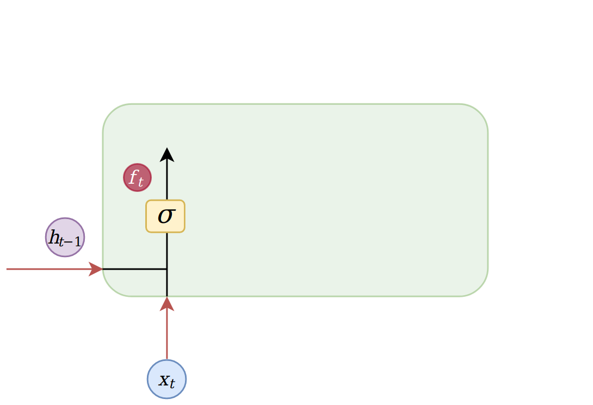 ] .center[ $f\_t = \sigma(W\_f \cdot [h\_{t-1}, x\_t] + b\_f)$ ] .small85[ - The **forget gate layer**: will quantify the proportion of the previous cell state $C_{t-1}$ to keep - Basically, this gate allows the LSTM to forget the information that is no longer required to understand things (a pronoun in a sentence for instance) ] .small80[ Example: **forget** the gender of the old subject when we see a new one ] --- # LSTM in detail .center[ 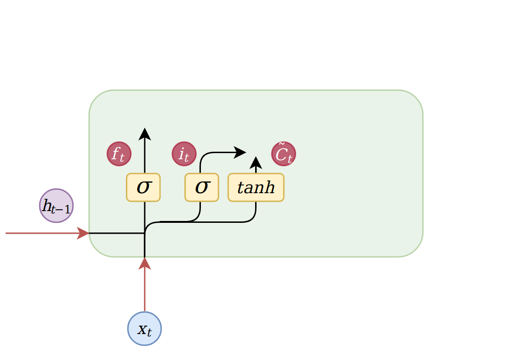 ] .center[ $i\_t = \sigma(W\_i \cdot [h\_{t-1}, x\_t] + b\_i)$</br> $\tilde{C}\_t = tanh(W\_C \cdot [h\_{t-1}, x\_t] + b\_C)$ ] .small80[ - The **input gate layer**: decides which values to update - The **candidate layer**: generates new candidate values to be added to the current state Those parts are responsible for the selection and the addition of information to the cell state ] .small80[ Example: **add** the gender of the new subject to the cell state, to replace the old one we’re forgetting ] --- # LSTM in detail .center[ 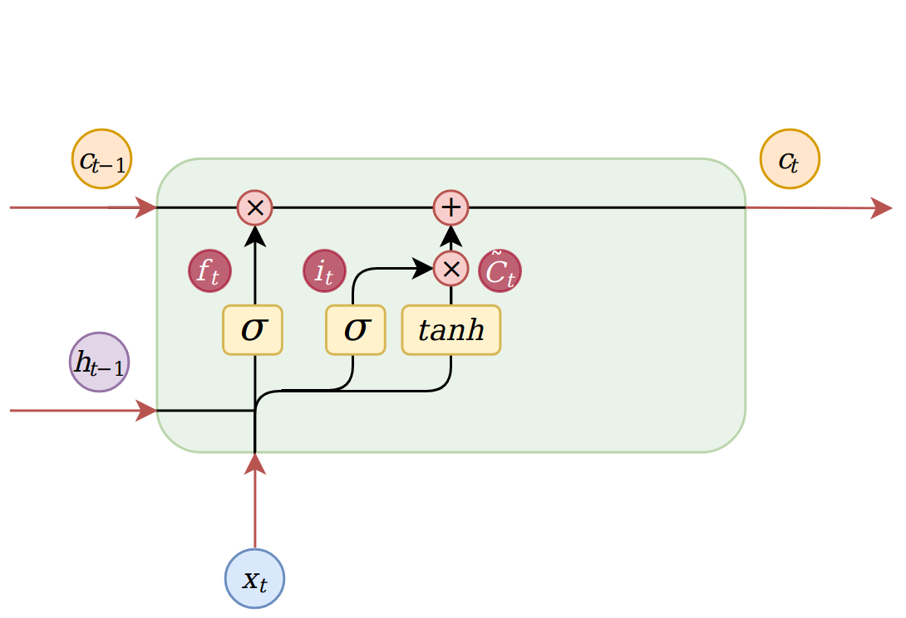 ] .center[ $C\_t = f\_t \odot C\_{t-1} + i\_t \odot \tilde{C}$ ] .small85[ - Actual cell state update: - we do an element-wise product between the old state and $f_t$ - then we add the new candidate values $i\_t \odot \tilde{C}$ ] --- # LSTM in detail .center[ 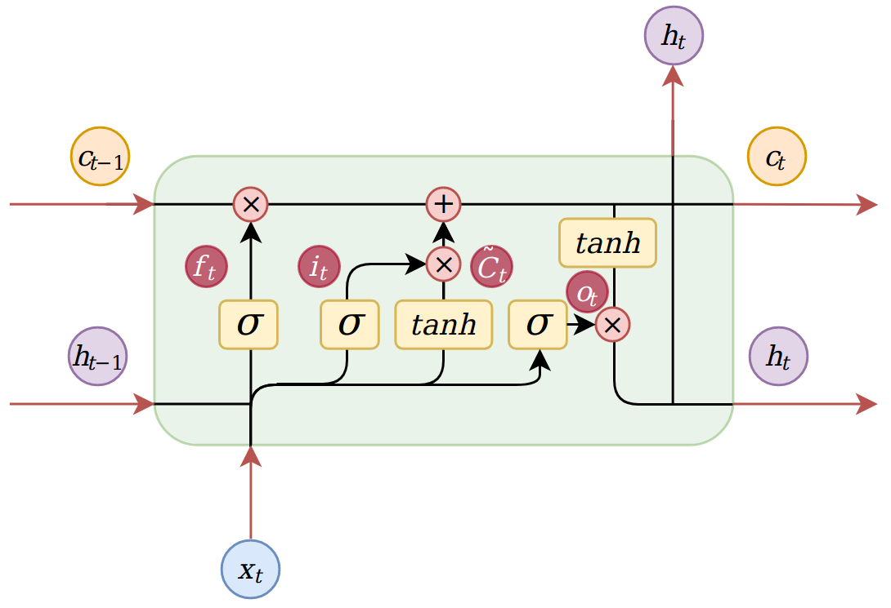 ] .center[ $o\_t = \sigma(W\_o \cdot [h\_{t-1}, x\_t] + b\_o)$</br> $h\_t = o\_t \odot tanh(C_t)$ ] .small85[ - The **output gate layer**: will retrieve the useful information by doing an element-wise product between the output and the squashed cell state ] .small80[ Example: **output** whether the subject is singular or plural as it will be a necessary information to conjugate the verb that follows ] --- # LSTM cell in pseudo-code Description of a LSTM cell with pseudo-code </br></br> .center[ 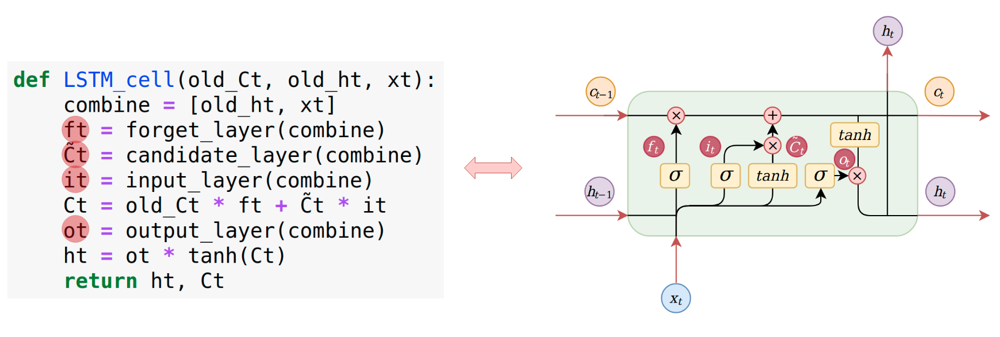 Four gates corresponding to trainable layers ] --- # Gated Recurrent Unit (GRU) - Similar idea as LSTM that also tackle vanishing gradient problems - Fewer gates and then fewer parameters: GRU is only using a reset gate and an update gate - No cell state here - No free lunch between LSTM and GRU: one or the other might be best suited to a given task but not systematically